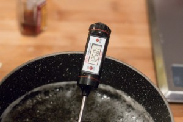
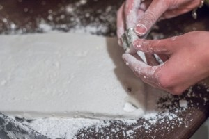
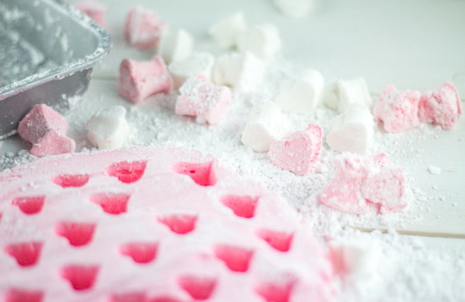
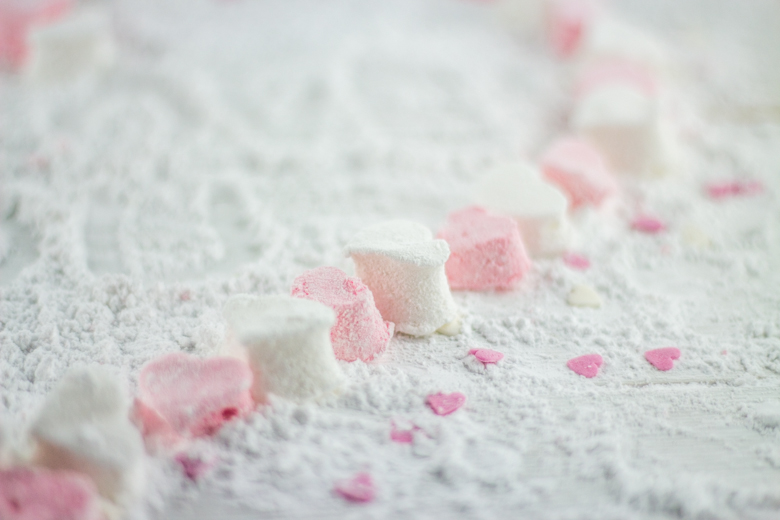
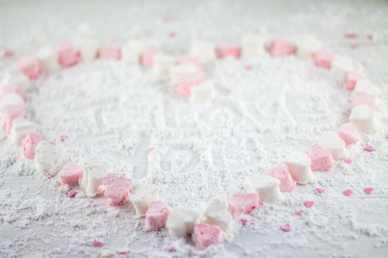
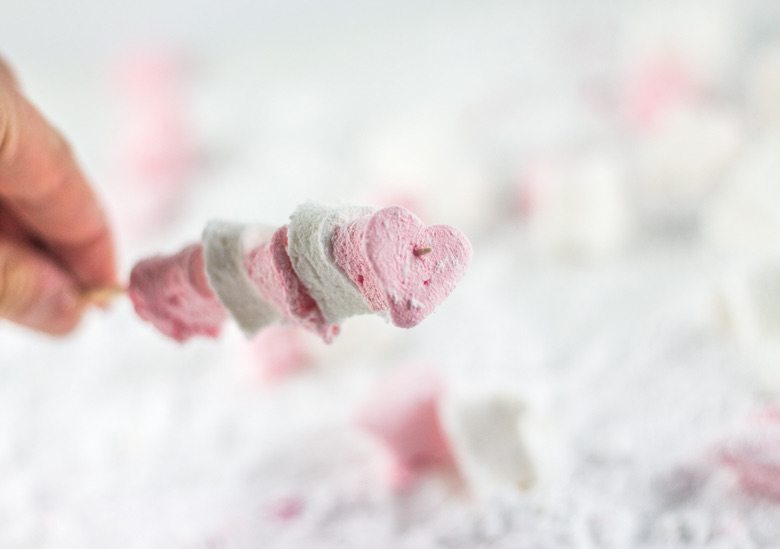

Un chamallow tout rose et une guimauve toute blanche

Aujourd’hui je vous propose une recette pleine de douceur avec ces petites guimauves en forme de cœur, pour faire chavirer le cœur de votre amoureux(se)!
J’aime par dessus tout la guimauve, surtout grillée au bord de la plage c’est juste génial! J’avais entendu dire comme quoi il était « difficile » d’en réaliser soi même alors j’ai mis un peu de temps avant de me lancer mais au final je suis déçue de ne pas l’avoir fait plus tôt car c’est plutôt simple en fait!
A l’origine la guimauve est préparée à partir du mucilage de la racine de guimauve connue pour ses propriétés antitussifs et utilisée comme remède médicamenteux. Plus tard elle fut utilisée comme confiserie et préparée telle que nous la connaissons à partir entre autre de gélatine. La guimauve est également connue sous le nom de chamallow ou marshmallow.
Avec cette recette je participe à la battle food, organisée par Hanane du très joli blog « safran gourmand » (que j’ai désigné marraine de cette nouvelle édition hihi) et qui a décidé de nous parler un peu d’amour puisque le thème de cette battle food#28 n’est autre que « la St Valentin ».
L’annonce du thème fut alors pour moi le moment idéal de me mettre à la préparation de mes chamallows (depuis le temps que j’en rêvais!) N’ayant aucune idée, aucune approche concernant cette confiserie, j’ai décidé de faire confiance les yeux fermés à Julie du blog Jujube en cuisine et j’ai eu bien raison car en suivant ses explications je suis parvenue à un résultat parfait! Ces jolies petits nuages roses et blancs sont rapides, simples à faire et parfaits pour épater votre chéri(e) le jour de la saint-Valentin (ou tout autre jour de l’année d’ailleurs!!)
Je vous laisse maintenant découvrir la recette et j’espère qu’elle vous plaira!
Ingrédients
- Blanc d'oeufs - 3
- Miel ou sirop de glucose - 1càs
- Sucre - 250g
- Eau - 100g
- Gélatine - 16g soit 8 feuilles de 2g
- Citron - quelques gouttes
- Arôme (ici extrait de vanille)
- Colorant alimentaire
- Sucre glace - Beaucoup!!!!
Instructions
- Mettre les feuilles de gélatine dans un volume d'eau froide
- Dans une casserole, verser le sucre, l'eau et le miel
- A feu moyen, porter à ébullition jusqu'à ce que le sirop atteigne la température de 125°
- Pendant ce temps, battre les blancs en neige avec quelques gouttes de jus de citron dans une grande jatte (j'ai utilisé la cuve de mon robot) Les blancs doivent devenir blancs mousseux Arrêter de battre avant qu'ils ne deviennent trop fermes. Réserver
- Quand votre sirop à atteint 125°, hors du feu ajouter la gélatine goutée et essorée
- Remuer afin de dissoudre complétement la gélatine
- Recommencer à battre les blancs en neige en versant délicatement le sirop
- Battre jusqu'à ce que le mélange ait tiédi (compter 15-20 minutes)
- Ajouter l'arôme de votre choix Ici j'ai ajouté 1càc d'extrait de vanille
- Si vous voulez colorer votre guimauve, répartissez la pâte dans plusieurs saladiers (autant que de couleurs souhaitées) et ajouter vos colorants il faut être rapide car la pâte à guimauve se fige assez rapidement Moi j'ai séparé ma pâte en deux pour en colorer une partie en rose pâle
- Verser la pâte à guimauve dans un moule huilé préalablement à l'aide d'une huile neutre
- Mettre au frais 2 bonnes heures
- Avant de démouler votre guimauve, saupoudrer votre plan de travail de "beaucoup" de sucre glace et mettez en également sur vos mains afin d'éviter que la guimauve ne colle de trop
- Découper votre guimauve comme vous le souhaitez. A l'aide d'emporte-pièces ou tout simplement en forme de cubes à l'aide d'un couteau
- Au fur et à mesure que vous découpez vos guimauves, placer les dans un récipient contenant du sucre glace pour éviter qu'elles ne collent entre elles






Les tips de la communauté
Recette extrêmement bien accueillie avec un enthousiasme débordant. Les commentaires soulignent la beauté des guimauves, la qualité de la présentation et la simplicité d'exécution contrairement aux idées reçues.
Astuces
- La recette est assez simple à faire selon l'auteure, contrairement à ce que beaucoup croient
- Utiliser un emporte-pièce pour façonner les guimauves en formes originales
- Le sucre glace est le meilleur pour enrober les guimauves
- Utiliser l'aspirateur pour nettoyer le sucre glace qui peut s'éparpiller
Variantes suggérées
- Déclinaison en différents parfums : fleur d'oranger, pistache, violette
- Enrober les guimauves de chocolat pour une variation gourmande
- Utiliser de la menthe pour aromatiser les guimauves
- Faire griller les guimauves sur le feu de cheminée
Ajustements signalés
- Attention à la gélatine : bien la faire fondre et aux blancs d'œufs qui ne tiennent pas bien
- Difficultés possibles à obtenir la bonne texture croustillante/moelleuse